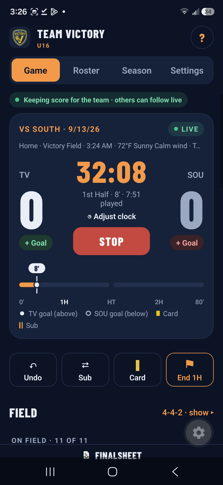
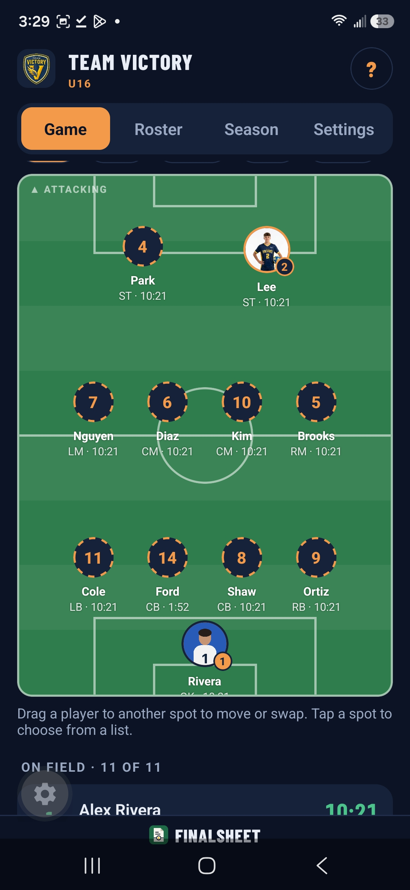
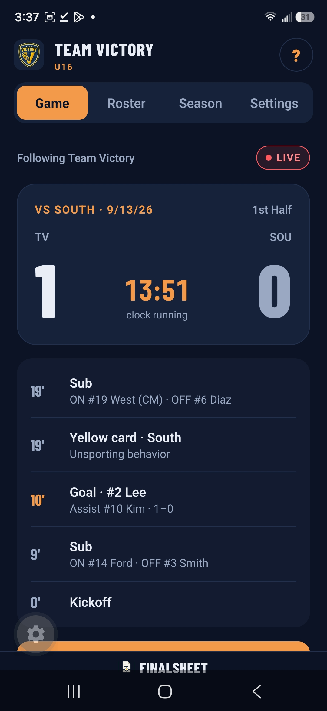
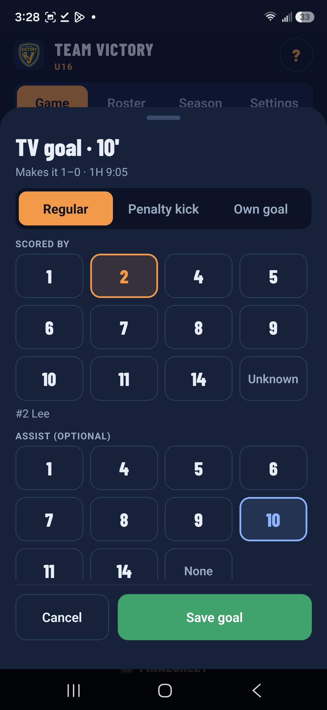
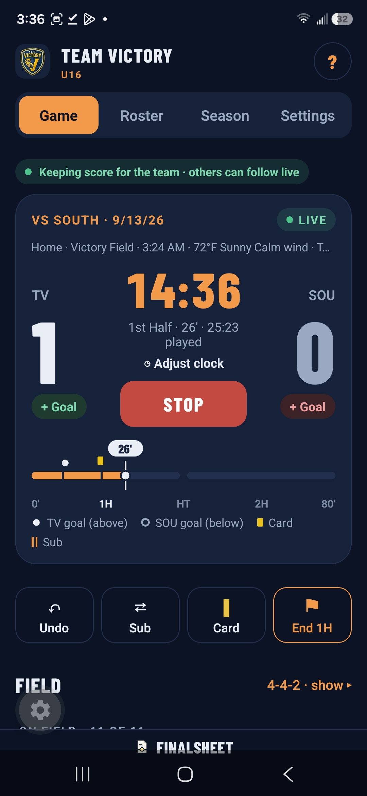
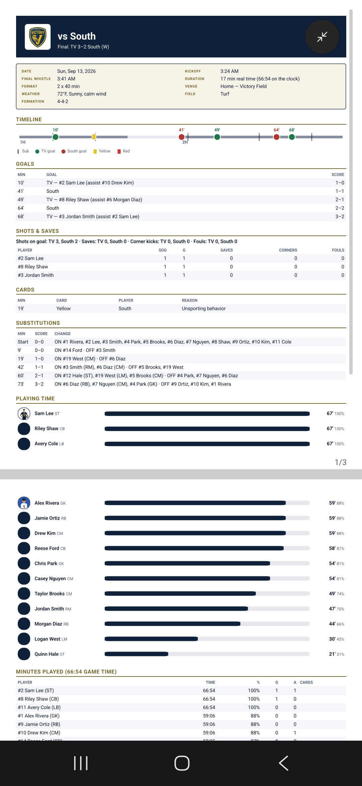
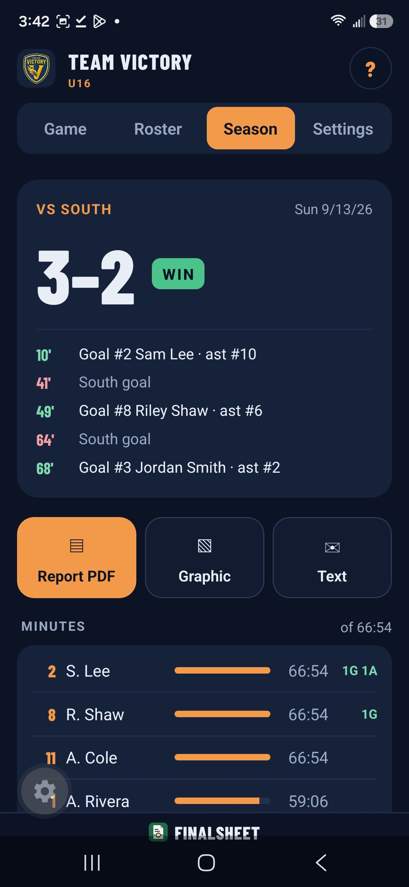
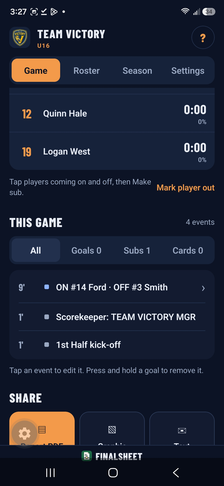

Every minute.
Every sub.
One final sheet.
Run the clock, make subs and log goals and cards from the sideline. Your staff and parents follow along live. At full time, send the game report and post the graphics before you leave the field.


One big button runs the game
Start, stop and resume the clock with one tap. Every player's minutes count to the second, and every sub is logged to the match minute.
- The half ends on its own at 0:00, even if your phone is locked
- Stop the clock with a reason (injury, goal, card) and match the field clock to the second
- Tap who comes off and who goes on, then Make sub. The bar tells you if the count is wrong.
- Mark a player out (sick, injured, unavailable) so the game doesn't count against their minutes
- Undo reverses the last sub, goal, card or clock action. Fix a sub later and minutes are recalculated.

Log it as it happens
Tap the ⚽ button, pick the scorer, then the assist. Only players on the field show up, so the wrong name can't slip in.
- Own goal, unknown scorer and PK goals. Tap any goal to fix it.
- Yellow and red cards with a reason, for your players or theirs. A second yellow sends the player off.
- Optional shots, saves, corners, fouls and in-game penalty kicks
- Overtime periods and a full penalty shootout, through sudden death


See who's where
The Field view shows your formation with every player's number and minutes. Drag a player onto a spot to move them, or onto a teammate to swap.
- 11v11, 9v9 and 7v7 formations, or type your own, like 4-1-3-2
- The player coming on takes the spot of the player going off
- Positions show in the player list and on the report
Finish. Save. Send.
Tap Finish & save game and the match is added to your season. The game report is ready to text, email or save to Files.
- PDF report with the score, a timeline of the match, goals, cards, every sub and each player's minutes
- Officials, weather, field and location in the title band
- Season table: games played, minutes, goals, assists, points and % of available minutes
- Season CSV that opens cleanly in Excel or Google Sheets
- YouTube, Hudl, Veo or Google Drive film links saved with each game


Post it before the bus leaves
FinalSheet already knows the score, the scorers and the lineup, so a graphic for Instagram takes a couple of taps. Save it to Photos or share it straight from the app.
- Final score, live score, goal and starting lineup
- Game day, plus a game-day graphic featuring one player over their number
- Story 9:16 and feed 4:5, saved at full resolution
- Brand kits with your colors, fonts and sponsor logos (Pro)
- Background photos, player cutouts, your own text and a layer editor for every piece (Pro)
One phone keeps score. Everyone follows.
Share your team with an invite code. The phone that kicks off keeps score, and your assistants and parents see the clock, score, lineup, minutes and timeline update live.
- Scorekeeper's phone died? A Manager or Scorekeeper can take over right where the game is.
- No signal at the field? Keep going. Everything syncs when you're back online.
- A shared schedule fills in the opponent, kickoff and location when you start a game
- Coach more than one team? Switch with a tap. Each keeps its own roster, season and kits.
- Sign in with Apple or email to back up every team, free

Manager
Runs the team: name, logo, colors and game rules, members and roles. Can always take over scoring.
Scorekeeper
Keeps score, edits the roster, games and film links, and updates the brand kits.
Follower
Follows games live, sees the season and reports, and makes share graphics. Joins free.
Kickoff to final sheet
Set up once
Add your roster (or paste it from a spreadsheet), your colors and your schedule.
Tap as it happens
Put your starters on the field, kick off, and log subs, goals and cards. Minutes count themselves.
Finish & share
Save the game to your season, send the report and post the graphic, all from the sideline.
Free to coach. Pro to run the team.
Pro is for whoever runs the team. Assistants and parents join free and get the team's Pro features through the Manager.
- Clock, subs and minutes
- Roster
- Goals, cards, shots and saves
- Share graphics in your team colors
- Join a team with an invite code and follow its games live
- Up to 2 teams you run
- Share your team: invite code, Scorekeepers and parents following live
- Game reports: PDF, text and CSV
- Save finished games to your season, with season stats across every game
- Look back at any past game, its timeline and film links
- Player photos on the roster, the field and goal graphics
- Custom graphics: brand kits, sponsor logos, background photos, cutouts and your own layout
- As many teams as you like
Your next game,
on one final sheet.
FinalSheet is in beta on iPhone. Install Apple's TestFlight app, then tap the button below on your iPhone.
App Store and Google Play releases are coming. Questions? Visit Support.